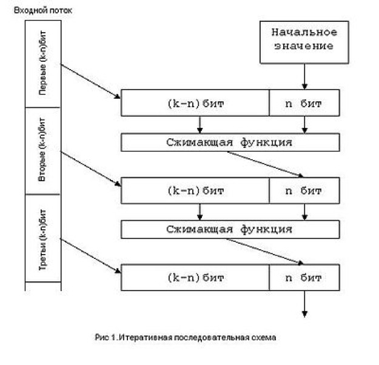

В общем случае в основе построения хеш-функции лежит итеративная последовательная схема. Ядром алгоритма является сжимающая функция — преобразование k входных в n выходных бит, где n — разрядность хеш-функции, а k — произвольное число, большее n. При этом сжимающая функция должна удовлетворять всем условиям криптостойкости.
Входной поток разбивается на блоки по (k − n) бит. Алгоритм использует временную переменную размером в n бит, в качестве начального значения которой берется некое общеизвестное число. Каждый следующий блок данных объединяется с выходным значением сжимающей функции на предыдущей итерации. Значением хеш-функции являются выходные n бит последней итерации. Каждый бит выходного значения хеш-функции зависит от всего входного потока данных и начального значения. Таким образом достигается лавинный эффект.
При проектировании хеш-функций на основе итеративной схемы возникает проблема с размером входного потока данных. Размер входного потока данных должен быть кратен (k − n). Как правило, перед началом алгоритма данные расширяются неким, заранее известным, способом.
Помимо однопроходных алгоритмов, существуют многопроходные алгоритмы, в которых ещё больше усиливается лавинный эффект. В этом случае данные сначала повторяются, а потом расширяются до необходимых размеров.
